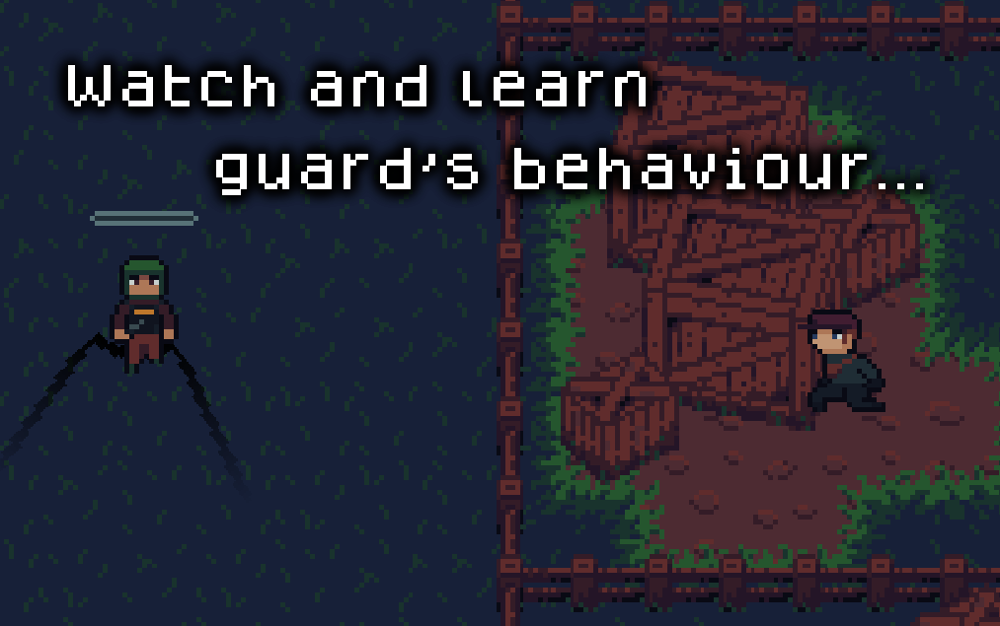
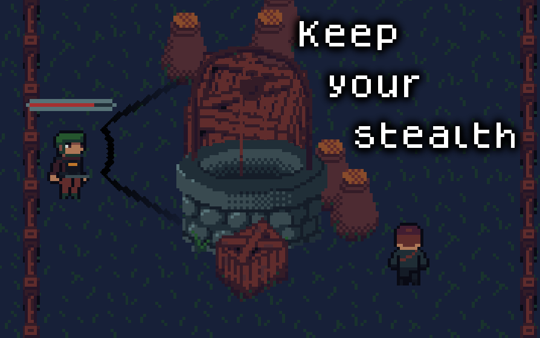

Projet de jeu scolaire réalisé sur Godot
Voir le trailer :
Silent Harvest est un jeu d’infiltration se déroulant dans un monde dystopique dans lequel une mégacorporation exerce un monopole sur l’agriculture, ce qui a causé une augmentation drastique des prix des produits agricoles.
Vous incarnez un père de famille prêt à tenter le tout pour le tout pour nourrir sa famille : s’infiltrer dans un complexe agricole pour voler des légumes.

Le jeu a pour mechanique principale d’éviter les gardes qui patrouillent le long du niveau, tout en récupérant les objets cachés sur la carte pour augmenter son score.
Le niveau est conçu de manière à pouvoir passer plus rapidement un garde dont on connait bien la ronde afin d’accélerer l’enchaînement des tentatives, et de faire ressentir de la progression au joueur au fur et à mesure qu’il apprend le jeu.

L’IA des ennemis fonctionne avec une machine à états : ils sont capables de suivre des patrouilles avec plusieurs points d’interêts (POI) entièrement programmables. Ils vont égaement aller inspecter un endroit s’ils entendent trop de bruit.
Il s’agit à ce jour de mon projet le plus aboutit, d’un point de vue graphique comme du design.